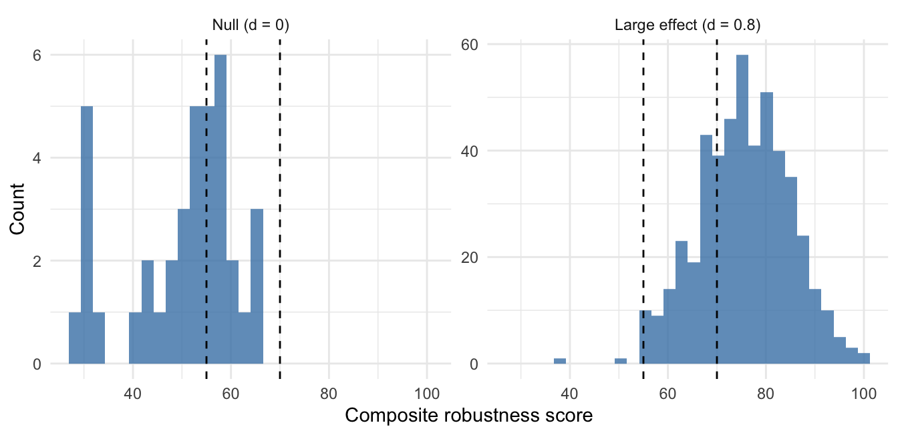
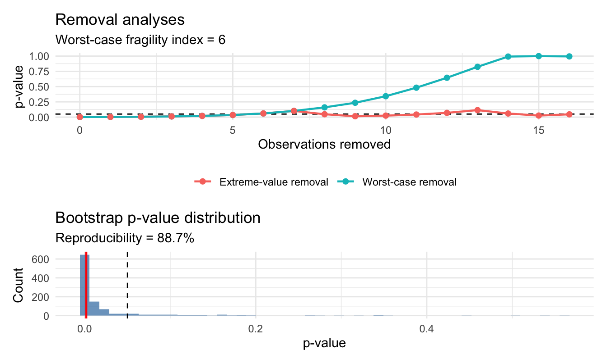

A p-value quantifies how surprising the observed data would be under the null hypothesis, but not how easily the resulting decision could be overturned. The stabilitest package combines three sensitivity views of one pre-specified analysis: jackknife leave-one-out influence, greedy worst-case observation removal, and the bootstrap same-decision rate. Component metrics and a composite 0-100 score are returned for two-sample location and proportion tests, linear model and ANCOVA terms, GLM and Cox terms, and TOST equivalence and non-inferiority endpoints. Categorical interpretation is fail-closed: a label is emitted only where an independent pre-registered study validates thresholds for that exact configuration. A Fisher exact-test study validated a two-band mapping. A prospective Welch study completed 4,500 training analyses but found no feasible mapping, so held-out data remained unopened and Welch labels are suppressed. The article also reports negative ANCOVA calibration studies. These outcomes illustrate why numeric sensitivity diagnostics and categorical assurance claims require different evidentiary standards.
Statistical reporting in clinical trials typically compresses the evidence into a binary decision at \(p < \alpha\). That compression discards something a reader needs. Consider two trials that both report \(p = 0.048\). In the first, the conclusion survives essentially any plausible perturbation of the data. In the second, it rests entirely on one extreme responder: delete that single patient and significance evaporates. Standard reporting treats these as identical findings.
This is not a hypothetical concern: sensitivity of conclusions to individual patients is a recurring theme in the trial-reporting literature (Senn 2007; Pocock et al. 2015). The ICH E9 guideline and its E9(R1) addendum (International Council for Harmonisation 1998, 2019) make it explicit, asking that inferences be robust to data limitations and to deviations from the assumptions of the main estimator, assessed through pre-specified sensitivity analyses. What the guidance does not supply is quantitative machinery. Three distinct questions jointly characterise the stability of a test conclusion, and each needs a different tool:
stabilitest (Ardelean 2026) answers all three for one pre-specified primary analysis, returning component metrics plus a composite score. Its contributions are:
NA
while numeric output is retained. Thresholds are never transferred between
method families by analogy.Deletion sensitivity is complementary to the estimand and sensitivity-analysis strategy required by ICH E9(R1). It identifies dependence on observed rows; it does not by itself address missing-data assumptions, intercurrent events, or alternative estimands.
Every package in Table 1 answers a version of “how much would have to change for this conclusion to flip?”, but they fall into two families.
sensemakr (Cinelli and Hazlett 2020; Cinelli et al. 2024),
konfound (Rosenberg 2025) and EValue
(VanderWeele and Ding 2017)
ask the question about unmeasured threats — a confounder, a selection
mechanism, or unobserved cases the analyst never had. Their answers are
analytic bounds computed from the reported estimate and its uncertainty; none
of them touches the rows of the analysis dataset. boot
(Canty and Ripley 2025) is a general resampling engine rather than a conclusion-level
robustness framework. fragility
(Lin and Chu 2025), influence.ME (Nieuwenhuis et al. 2012),
car (Fox and Weisberg 2019), zaminfluence (GitHub only; Giordano et al. (2026a),
with the associated paper Broderick et al. (2023)) and stabilitest instead ask about the
observed sample: which specific patients, if perturbed or removed, would
change the conclusion?
Within that second family the differences are of scope and rigour rather than
kind. fragility is restricted to flipping binary outcome labels, implementing
the clinical fragility index of Walsh et al. (2014). car and influence.ME
offer classical single-deletion diagnostics in the tradition of Cook (1977),
which answer a different, single-deletion question from the package’s
multi-observation adversarial search. zaminfluence
approximates the adversarial leave-\(k\)-out answer efficiently via influence
functions, but for Z-estimators in general rather than the two-sample and
model-term designs of trial reporting.
| Package | Threat | Scope |
|---|---|---|
| stabilitest | Observed-row deletion | Tests and model terms |
| fragility | Outcome-status flips | Binary outcomes |
| sensemakr | Omitted confounding | Linear regression |
| konfound | Omitted bias / cases | Regression inference |
| EValue | Unmeasured bias | Observational effects |
| boot | Sampling variation | Any statistic |
| influence.ME | Influential groups | Mixed models |
| car | Single-case influence | lm / glm |
| zaminfluence | Approximate deletion | Z-estimators |
stabilitest’s distinguishing choices relative to all of these are: it evaluates deletion, jackknife and bootstrap sensitivity together as three views of one conclusion rather than offering a single diagnostic; its worst-case removal is an actual adversarial refit search rather than a residual/leverage heuristic or a linear approximation; and its composite score carries a categorical verdict only where an independent pre-registered calibration has validated it for that exact configuration. No other package in Table 1 ships a calibration registry or a fail-closed labelling policy.
Given two samples — or a model term, see the API section — and a significance level \(\alpha\), four analyses are performed. For two independent groups, \(n_1\) and \(n_2\) denote per-group sizes and \(N=n_1+n_2\) is the total number of observations. Three analyses enter the composite score; the fourth is retained as a deliberate contrast.
Jackknife (leave-one-out). Each observation is deleted in turn and the test repeated, following the classical framework of Shao and Tu (1995). Outputs are the conclusion stability \(S_\mathrm{jack}\) (percentage of deletions preserving the significance decision), the set of influential observations (deletion flips that decision, or shifts \(p\) by more than \(\delta = 0.05\)), and the leave-one-out \(p\)-value range. Because single-deletion influence shrinks as \(\sim 1/n\), high jackknife stability in a large sample is weak evidence of robustness. The component’s chief value is identifying specific observations for data-quality review; the package’s printed output says so explicitly. Conclusion stability does not guarantee preservation of effect direction: direction reversals must be inspected separately from the significance decision.
Worst-case removal (primary fragility analysis). A greedy algorithm deletes, at each step, the observation whose removal moves the \(p\)-value furthest toward overturning the conclusion, up to \(k_{\max} = \lfloor 0.30\,n \rfloor\) deletions. The removal fragility index \(k_\mathrm{frag}\) is the step at which the conclusion first flips. If no flip occurs by \(k_{\max}\), the stored value \(k_{\max}+1\) is a right-censoring code and is reported as \(>k_{\max}\), not as an observed flip. This follows the maximum influence perturbation of Broderick et al. (2023) (see also Giordano et al. (2026b) and Giordano et al. (2026c)), who showed that in prominent published analyses removing under 1% of observations can reverse the sign of an estimated effect. When a flip is found, the greedy set is sufficient to overturn the conclusion, so \(k_\mathrm{frag}\) is an upper bound on the size of the minimal overturning subset; no universal optimality claim is made. Because a flip from \(p = 0.047\) to \(p = 0.053\) is a knife-edge event (Potter 2020), the package returns and plots the full \(p\)-value trajectory rather than the index alone. Note the terminology: the removal fragility index counts deleted observations and so reduces \(n\), which distinguishes it from the Walsh fragility index (Walsh et al. 2014), which flips event status while holding \(n\) fixed.
Extreme-value removal (descriptive). Cumulative deletion of observations most distant from the recomputed grand mean — the familiar “we removed the outliers and the result held” procedure. It does not enter the composite score. It is retained because the gap between this index and the worst-case index measures how much protection the outlier narrative actually provides.
Bootstrap same-decision rate. \(B\) resamples are drawn with replacement
within groups (Efron and Tibshirani 1993); \(S_\mathrm{boot}\) is the empirical proportion that
preserves the observed significance decision. It is a plug-in quantity under
the empirical distribution, not an unconditional probability that a future
study will replicate. It mostly reflects strength of evidence at the observed
effect size, not resistance to contamination: a marginal \(p\)-value can yield
\(S_\mathrm{boot}\) near 50–60% in clean data. The API retains the historical
field name bootstrap_reproducibility for compatibility.
Composite score. \(R = w_1 S_\mathrm{jack} + w_2 F + w_3 S_\mathrm{boot}\), where \(F = 100 \cdot \min\!\left(k_\mathrm{frag} / (k_{\max}+1),\, 1\right)\) rescales the fragility index to the full 0–100 range. Default weights are \(w = (0.4, 0.4, 0.2)\): influence and fragility carry equal weight, the same-decision term is down-weighted because it largely restates the \(p\)-value. The weights are a heuristic communication device, not a derived quantity. They are an explicit argument and should be fixed in the statistical analysis plan. Two results with the same score can be stable in different ways, so the components — especially the fragility index and the identity of the observations behind it — are the substance of reporting.
Two-sample analyses go through a single dispatcher; model-based and equivalence analyses have their own entry points sharing a common case-deletion engine.
# Two-sample: t.test, paired.t.test, wilcoxon, wilcoxon.paired,
# brunner_munzel, fisher, chisq, prop
robustness_analysis(group1, group2, test_type = "t.test")
# Model terms: single coefficient or a multi-df factor tested jointly
robustness_lm(change ~ arm + baseline, data = d, term = "arm")
robustness_glm(y ~ arm + age, data = d, term = "arm", family = binomial())
robustness_surv(Surv(time, event) ~ arm, data = d, term = "arm")
# Equivalence / non-inferiority: mean, risk difference, odds ratio
robustness_tost(g1, g2, type = "equivalence", endpoint = "mean",
delta_L = -20, delta_U = 20)For model engines all components operate on rows (subjects) of the analysis
dataset, with the conclusion defined by the \(p\)-value of a pre-specified term
— a single coefficient, or a multi-df factor term via a joint test
(drop1 \(F\) for lm, likelihood-ratio for glm and coxph). Deleting whole
subjects, with their covariates and follow-up, preserves the adjustment
structure and handles censoring naturally. Fits that fail after deletion
(a factor level vanishing, say) are skipped and reported rather than silently
dropped.
Arguments are deliberately uniform across engines: alpha, n_boot,
max_removal_pct, weights, and seed mean the same thing everywhere, and
seed defaults to 123 so that a bare call is reproducible.
Analyses return a classed list (robustness_analysis, robustness_model, or
robustness_tost) containing the original test result, a
robustness_metrics tibble of 17 component metrics, the per-step trajectories
of each removal analysis, the bootstrap draws, the resolved calibration
decision, and the analysis profile used to make that decision. print()
methods render a structured summary; plot() returns the removal trajectories
and the bootstrap \(p\)-value distribution.
The mechanism that makes label suppression systematic rather than ad hoc is a
registry shipped as inst/extdata/calibration-registry.csv, keyed by the
resolved method rather than by the user-facing argument. A call with
test_type = "t.test" resolves to welch_unpaired or paired_t; one with
test_type = "fisher" resolves to fisher_exact. Each row carries a status,
cutoffs where applicable, a version string, and a provenance pointer to the
study that produced it.
Label resolution is fail-closed. A categorical label is emitted only when the
resolved method has a validated_method_specific row and the observed
conclusion type matches and the weight vector matches the calibrated one
and the design profile falls inside the study’s eligibility bounds. Any
mismatch yields NA — with a printed reason — while the numeric score and
all components are retained. There is no fallback to a “nearest” calibration.
The historical Welch 55/70 mapping is now an inactive comparator and is never
applied to Welch, ANCOVA, or another runtime result.
The original 55/70 mapping was based on differences between scenario-level
average scores. A prospective replacement study tested whether those averages
supported case-level categorical interpretation. The calibration unit was a
significant independent-groups Welch test at \(\alpha=0.05\), with default
weights \((0.4,0.4,0.2)\), n_boot = 1000, and a 30% removal cap. The six core
design archetypes crossed per-group sizes from 25 to 200, balanced and 40/60
allocations, and variance ratios 1, 2, and 1/2. Within each archetype the null
used zero mean difference, the borderline stratum targeted 60% power, and the
clear stratum targeted 95% power.
All 18 training cells reached their quota of 250 completed significant
analyses: 1,500 null, 1,500 borderline, and 1,500 clear analyses (4,500 total),
with zero analysis failures. The frozen search considered integer three-band
and two-band mappings. No candidate passed all safety, identification,
ordinal-accuracy, occupancy, and ordering requirements, so the final result is
uncalibrated with no cutoffs. Under the pre-specified protocol this training
outcome was final: held-out validation remained unopened, no validation
estimates exist, and no positive runtime eligibility profile was published.
The historical 55/70 mapping was retained as a named training comparator. Its false-reassurance estimate was 0.458 (Wilson upper 0.479, scenario-cluster upper 0.513, conservative upper 0.513), against gates of 0.05 and 0.10. Clear-effect identification was 0.499 (Wilson lower 0.478, scenario-cluster lower 0.348, conservative lower 0.348), against gates of 0.70 and 0.60. Balanced ordinal accuracy was 0.558 (gate 0.70), and minimum band occupancy was 0.227. Pooled ordering was preserved and no material reversal was detected, but those secondary conditions could not rescue the failed primary gates.
The frozen no-candidate SHA-256 is represented in eight consecutive blocks.
The first four are 9c45481b 952cab7c b9b9086e 37924a39; the final four
are d83fe048 4628745d be2e79eb 33e8797d.
the compact supplementary artifact records this hash, source hashes, runtime,
occupancy, and the unopened-validation flag. The active registry version is
welch-2026-2: numeric scores and components remain available, while the
categorical label is NA.
Table 2 retains the earlier 12-scenario experiment as a descriptive stress example, regenerated with the released package (12 scenarios \(\times\) 500 replications, \(B=200\)). It was not used to fit or confirm the prospective decision.
| \(d\) | \(n\) | Cont. | Rej. rate | Score | \(k_{\mathrm{wc}}\) | \(k_{\mathrm{ex}}\) | Boot. % |
|---|---|---|---|---|---|---|---|
| 0.0 | 25 | 0 | 0.040 | 54.7 | 2.0 | 2 | 67.1 |
| 0.0 | 25 | 2 | 0.064 | 52.6 | 1.0 | 1 | 66.6 |
| 0.0 | 50 | 0 | 0.076 | 50.0 | 1.5 | 2 | 63.1 |
| 0.0 | 50 | 2 | 0.084 | 51.3 | 2.0 | 2 | 65.5 |
| 0.5 | 25 | 0 | 0.392 | 61.1 | 3.0 | 4 | 75.3 |
| 0.5 | 25 | 2 | 0.670 | 64.5 | 4.0 | 4 | 80.2 |
| 0.5 | 50 | 0 | 0.698 | 63.2 | 5.0 | 11 | 80.3 |
| 0.5 | 50 | 2 | 0.864 | 65.7 | 6.0 | 10 | 84.8 |
| 0.8 | 25 | 0 | 0.808 | 69.7 | 5.0 | 8 | 83.0 |
| 0.8 | 25 | 2 | 0.922 | 73.3 | 6.0 | 9 | 88.6 |
| 0.8 | 50 | 0 | 0.976 | 75.5 | 12.0 | 26 | 94.1 |
| 0.8 | 50 | 2 | 1.000 | 77.6 | 14.0 | 26 | 96.3 |
Two features of Table 2 deserve emphasis. First, under the null the rejection rate is at or near nominal in clean data (0.040 and 0.076 across the two sample sizes) and is higher under contamination (0.064 and 0.084). The Monte Carlo standard error at 500 replications is about 0.010, so individual cells should not be over-read. Among findings that reached significance, median worst-case fragility is one or two observations throughout the null rows. This is a descriptive pattern, not evidence that a particular score threshold safely classifies an individual result.
Second, and more consequentially, the median extreme-value index is systematically larger than the worst-case index in the \(d=0.8\) scenarios — 26 versus 12 at \(d = 0.8\), \(n = 50\). Judging stability by removing apparent outliers makes a result look roughly twice as sturdy as an adversarial reading shows it to be. The most damaging observations are usually not the obvious ones.
Figure 1 shows the underlying score distributions.

Figure 1: Descriptive score distributions for significant results under the null (d = 0, left) and the study’s d = 0.8 scenario (right), n = 50 per group, uncontaminated. Dashed lines mark the inactive historical 55/70 mapping. The distributions overlap; this figure is not validating evidence for categorical bands.
An independent study for Fisher’s exact test on two-arm binary outcomes delivered the package’s sole active categorical calibration. Its design was frozen before execution: truth strata defined by enumerated exact power rather than by observed effect size (null exact; clear at exact power 0.95; a borderline stratum at 0.60 retained as diagnostic only and excluded from threshold fitting), and a sealed score-only pilot gating production.
The study also settled the weight question empirically. On binary data the jackknife stability component is constant at 100 in every cell — a single deletion cannot move a Fisher \(p\)-value across \(\alpha\) at these sample sizes — so it carries zero information. The frozen design therefore uses jackknife-light weights \((0, 0.5, 0.5)\), which maximise score granularity without changing discrimination.
Training selected the cutoff \(L = 58\) with false reassurance 0.0493 (Wilson
upper 0.0607) and identification of clear effects 0.7608 (Wilson lower 0.740).
Held-out confirmation, opened only once, gave 0.0367 and 0.7333; under the
conservative-of-Wilson-and-cluster-bootstrap rule the reported bounds are a
false-reassurance upper of 0.0617 and an identification lower of 0.6767, both
inside the frozen gates. The registry row is fisher-2026-1, provenance
study:binary_proportion@cc3344931614.
The resulting mapping is two-band — score \(\leq 58\) Fragile, \(> 58\) Not fragile — with no Robust tier, because a single binary comparison does not carry enough information to support a third band at the required error rates. It applies only within the study’s eligibility profile: per-arm \(n\) in \([25, 200]\), allocation ratio in \([0.8, 1.25]\), control-arm event rate in \([0.08, 0.55]\) with at least three events and three non-events. Outside that profile, or under default weights, the label is suppressed.
Covariate-adjusted analysis is an important calibration target because many confirmatory trials adjust for baseline. Three pre-registered studies were conducted; all closed without a usable label under their frozen designs.
ANCOVA Study 1 evaluated a three-band mapping with default weights. No threshold met the pre-specified training requirements, so held-out data was not opened. Within its canonical Gaussian scenarios the composite score was nearly monotone in the \(p\)-value (Spearman correlation between its bootstrap component and \(-\log_{10}p\) was approximately 0.99). The result establishes empirical infeasibility under that design; it does not prove that every future ANCOVA score or scenario definition must fail.
ANCOVA Study 2 evaluated a two-band mapping with jackknife-light weights. Its sealed pilot showed score-location separation (\(\Delta=24.4\), overlap 0.034, AUC 0.892), but production training found no feasible cutoff: the best clear-effect identification at a false-reassurance-safe threshold was 0.554, below the pre-specified 0.70 requirement. This discrepancy shows why pilot location metrics alone are insufficient for deciding whether a categorical claim is feasible.
The assumption-violation study then asked whether the score added discrimination beyond \(p\) for violations represented in a frozen scenario suite. It completed 2,100 analyses with zero failures. The pooled difference \(\mathrm{AUC}_\mathrm{score}-\mathrm{AUC}_p\) was 0.0053, with a scenario-cluster bootstrap 95% interval \([-0.111,0.129]\); the added discrimination was not confirmed.
The ANCOVA registry rows remain uncalibrated, and labels stay suppressed.
Audit identifiers, hashes, and raw decision strings are retained in the
study-specific published/ directories rather than in reader-facing prose.
The package ships a synthetic phase II analgesic trial: 55 patients, change
from baseline in pain score at week 12. Results below are loaded from a
committed artifact generated with the package-default n_boot = 1000 and
seed = 123. Welch is numeric-only after the prospective negative result.
res <- robustness_analysis(pain_treatment, pain_placebo, test_type = "t.test",
n_boot = 1000, seed = 123, interpret = TRUE)The Welch test gives a mean difference of -11.40 points, \(p = 0.0018\). The robustness analysis returns a numeric score of 71.9/100 with no categorical label, built from: jackknife stability 100.0% with 0 influential observations flagged; a worst-case fragility index of \(k = 6\) (10.9% of the sample), with \(p\) rising to 0.0602 after the sixth deletion; and bootstrap same-decision rate 88.7%.
Figure 2 shows the two diagnostic displays produced by
plot(). The upper panel makes the contrast of the Methods section concrete:
the worst-case trajectory crosses \(\alpha\) well before the extreme-value
trajectory does.

Figure 2: Diagnostic plots for the Welch case study. Top: p-value trajectories under worst-case (adversarial) and extreme-value (outlier-ranked) removal, with the dashed line at alpha = 0.05. Bottom: bootstrap p-value distribution, red line at the observed p-value.
For a reader, the actionable output is not the score but the six named patients — led by one extreme responder — whose charts warrant source-data review. The observed component pattern resembles the study’s clear-effect scenarios more than its null scenarios, but a sensitivity diagnostic does not establish which data-generating truth produced an individual dataset.
Short live examples across the remaining engines. An ANCOVA term on the packaged illustration dataset:
res_lm <- robustness_lm(change ~ arm + baseline_pain, data = pain_ancova_trial,
term = "arm", n_boot = 300, seed = 123)
res_lm$robustness_metrics[, c("worstcase_fragility_k", "worstcase_fragility_pct",
"bootstrap_reproducibility", "overall_robustness")]# A tibble: 1 × 4
worstcase_fragility_k worstcase_fragility_pct bootstrap_reproducib…¹
<int> <dbl> <dbl>
1 7 8.75 83.3
# ℹ abbreviated name: ¹bootstrap_reproducibility
# ℹ 1 more variable: overall_robustness <dbl>The score is numeric-only: 67.9 with no label, exactly as the negative result above requires. A TOST equivalence analysis behaves the same way:
res_tost <- robustness_tost(pain_treatment, pain_placebo, type = "equivalence",
endpoint = "mean", delta_L = -20, delta_U = 20,
n_boot = 300, seed = 123)
c(fragility_k = res_tost$robustness_metrics$worstcase_fragility_k,
score = round(res_tost$robustness_metrics$overall_robustness, 1))fragility_k score
4.0 65.4 A Fisher analysis inside the calibrated profile, under the calibrated weights, does receive a label:
set.seed(2026)
ctrl <- rbinom(60, 1, 0.15); trt <- rbinom(60, 1, 0.40)
res_f <- robustness_analysis(trt, ctrl, test_type = "fisher", n_boot = 1000,
seed = 123,
weights = c(jackknife = 0, fragility = 0.5,
bootstrap = 0.5))
c(score = round(res_f$robustness_metrics$overall_robustness, 1),
label = res_f$robustness_interpretation) score label
"67.6" "Not fragile" The same data under default weights returns identical component metrics but a different composite (75.7) and a suppressed label — the registry requires the calibrated weight vector, not merely the calibrated method.
Cost is dominated by the greedy search, which performs \(O(N \cdot k_{\max})\) test evaluations. For total \(N=55\), \(k_{\max}=16\) and the greedy candidate refits total \(\sum_{j=40}^{55}j=760\). A full default run uses approximately \(1+55+760+16+1000=1832\) test evaluations before overhead: the original test, jackknife, greedy search, descriptive extreme-value path, and bootstrap. Closed-form tests are therefore sub-second; model engines pay for repeated refits.
| Engine | n = 50 per arm (s) | n = 150 per arm (s) |
|---|---|---|
| robustness_analysis (Welch) | 0.53 | 1.43 |
| robustness_lm (ANCOVA) | 0.98 | 4.22 |
| robustness_glm (binomial) | 1.62 | 8.03 |
| robustness_surv (Cox) | 1.64 | 6.17 |
| robustness_tost (mean equivalence) | 0.77 | 1.48 |
The practical implication is that interactive use is comfortable at trial scale, and that a large calibration study — thousands of replications — belongs in a batch script, which is how the studies reported here were run.
The package carries 1018 passing testthat assertions across
7 test files, covering the analysis engines, edge cases (degenerate groups, zero
variance, complete separation, failed refits), the packaged datasets, the
calibration registry’s resolution logic, and the calibration documentation
itself.
That last one is unusual enough to describe. A source-tree documentation audit, run as part of the test suite, asserts that the README, NEWS, vignettes, manuscript, and every study SAP still state the policy invariants: that uncalibrated labels are suppressed, that the historical Welch mapping is inactive, and that each frozen acceptance criterion remains present in its own statistical analysis plan. The intent is to make it mechanically hard to quietly weaken a published calibration claim through documentation drift.
Each calibration study additionally publishes compact decision artifacts in
its own published/ directory: occupancy and failure tables, power
verification, candidate diagnostics, a registry row, manifests, and a hash
ledger. Candidate hashes are recorded before held-out data is opened, so
the sequencing of any decision is auditable after the fact.
The framework separates three questions usually blurred together, and its sharpest practical lesson is the gap between adversarial and symmetric removal: in the descriptive stress simulation, adversarial deletion and cumulative grand-mean extreme-value deletion produced materially different fragility summaries. That comparison does not benchmark Cook’s distance, DFBETAs, car, or influence.ME.
Several limitations deserve statement rather than burial.
The score is largely a monotone transform of the \(p\)-value. In clean parametric settings the composite score re-expresses the evidence the \(p\)-value already carries; the ANCOVA program measured this directly. This is a scope condition, not a defect, but it bounds what the score can be used for. Its added value lies in (i) identifying the specific observations carrying the conclusion, (ii) the worst-case deletion bound, and (iii) behaviour under contamination, where the \(p\)-value alone is silent — see the null-with- contamination rows of Table 2. The assumption-violation study tested whether the score added discrimination beyond \(p\) under its frozen violation suite and did not confirm such an improvement.
The weights are a convention. They are explicit, pre-specifiable, and demonstrably not load-bearing for discrimination (the Fisher weight study found AUC essentially unchanged across weightings), but they are not derived from theory. The score is a communication device; the components are the substance.
The greedy index is an upper bound. Exact minimal overturning subsets are combinatorially hard. The algorithm returns a sufficient overturning set when it finds one, not a certificate of minimality. Certified minimal sets — via integer-programming formulations — remain future work.
Binary significance framing. Inherited from the fragility concept itself and criticised for good reason (Potter 2020); the package’s response is to report the trajectory alongside the index and to frame the index as an upper bound, wherever the index is defined rather than only in a limitations section.
Independence is assumed. Clustered and longitudinal designs are not
supported; for those, influence.ME addresses the grouping-factor question.
Calibration coverage is deliberately narrow. Only the eligible Fisher exact-test configuration under jackknife-light weights carries a label. Welch, paired, rank, Brunner–Munzel, non-canonical binary, model-based, Cox, and TOST analyses return numeric output with a suppressed label pending an independent positive calibration. Users who want a verdict where none is licensed are, by design, not given one.
stabilitest asks how much of the data a conclusion actually rests on, and answers with component metrics that name the observations responsible. Its methodological position is that a categorical robustness verdict is a claim requiring validation for the specific analysis at hand, and that the honest response to a failed validation is silence plus a published negative result. The package is available from github.com/ma-brain/stabilitest.
stabilitest, sensemakr, konfound, EValue, boot, fragility, influence.ME, car
CausalInference, Econometrics, Finance, MetaAnalysis, MixedModels, Optimization, Survival, TeachingStatistics, TimeSeries
Text and figures are licensed under Creative Commons Attribution CC BY 4.0. The figures that have been reused from other sources don't fall under this license and can be recognized by a note in their caption: "Figure from ...".
For attribution, please cite this work as
Ardelean, "Stabilitest: Robustness and Fragility Analysis of Statistical Test Conclusions in R", The R Journal, 2026
BibTeX citation
@article{stabilitest,
author = {Ardelean, Marius},
title = {Stabilitest: Robustness and Fragility Analysis of Statistical Test Conclusions in R},
journal = {The R Journal},
year = {2026},
issn = {2073-4859},
pages = {1}
}